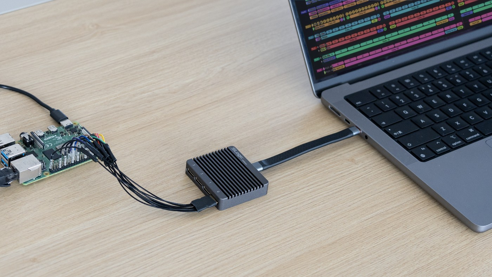
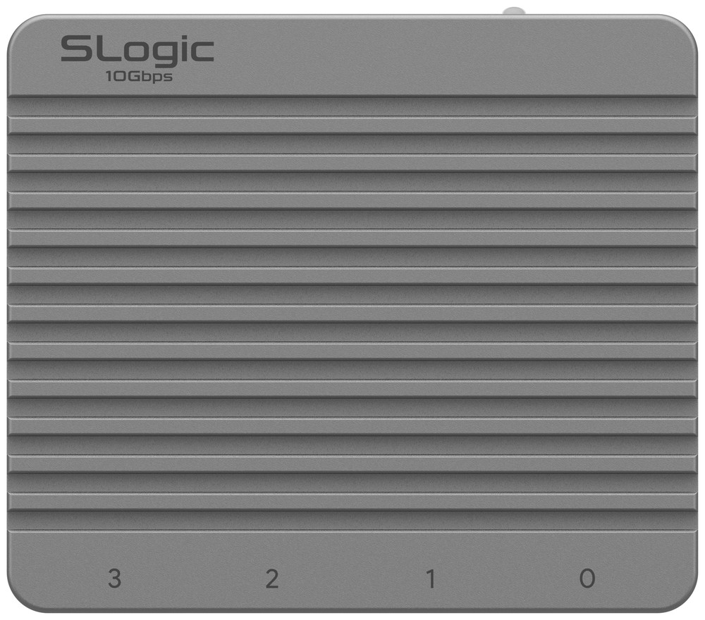
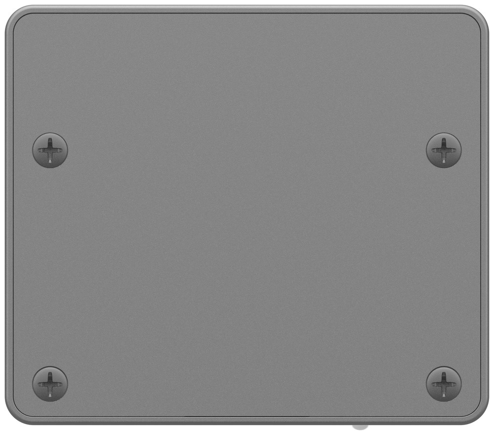
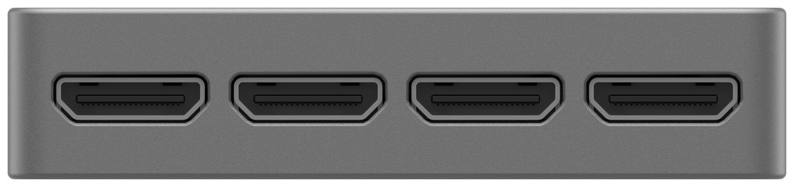
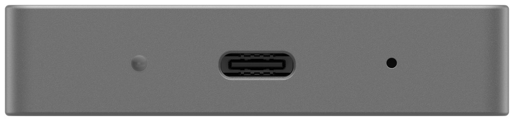
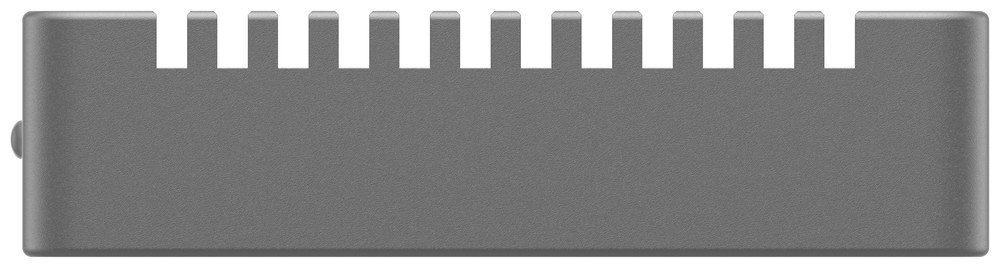
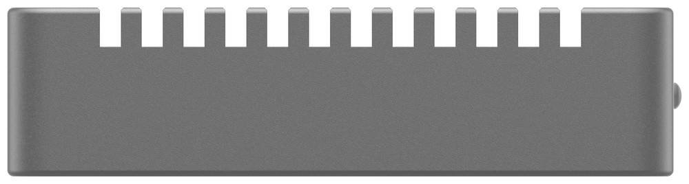
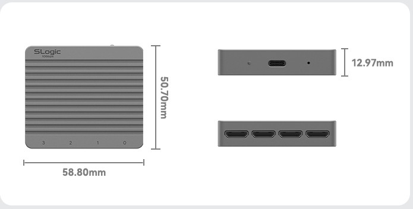
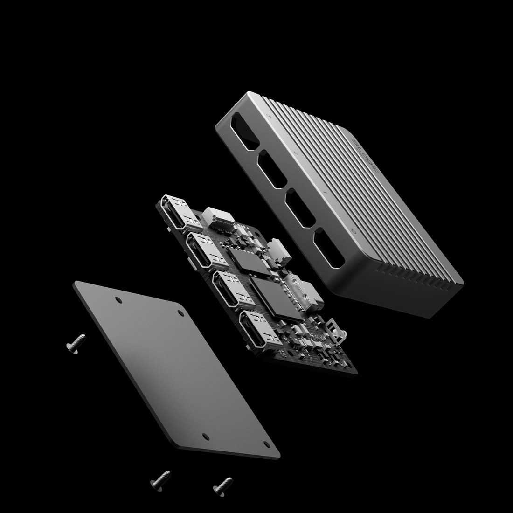

中文
中文SLogic32U3 简介
2026-10-06
更新历史
| 日期 | 版本 | 作者 | 更新内容 |
|---|---|---|---|
| 2026-10-06 | v0.3 | Sipeed |
|
| 2026-09-30 | v0.1 | Sipeed |
|
简介
简介
SLogic32U3 是 Sipeed SLogic 系列的旗舰逻辑分析仪，也是全球首款采用 USB3.2 Gen2 接口的逻辑分析仪。它在 59×51×13 mm 的 CNC 铝合金外壳中实现 32 通道高速 Stream 采集：1400M@4CH、800M@8CH、400M@16CH、200M@32CH，输入数字信号带宽高达 350 MHz。
依托 USB3.2 Gen2 接口与板载 2 Gbit DDR3 弹性缓存，实际可持续回传 800 MB/s（6.4 Gbps），波形直接流入电脑内存甚至硬盘，不再受设备端缓存深度限制。数字输入支持 0~10 V 范围、0~6 V 可调阈值，并可选配 4 通道 ADC 模组，让同一台设备兼具采样示波器能力。
上位机方面官方提供 SLogicView、ngscopeclient、sigrok-cli，另有免安装的网页版 SLogicWeb（slogic.sipeed.com），连安卓手机都能直接用浏览器采集。

🎉 SLogic32U3 正在众筹！ 欢迎到 Kickstarter 支持我们。
第一次拿到设备，请看快速上手。
特点与规格
核心特性
- USB3.2 Gen2 高速接口：全球首款 USB3.2 Gen2 逻辑分析仪，接口规范速度 10 Gbps，配合板载 2 Gbit DDR3 弹性缓存，实际可持续回传 800 MB/s（6.4 Gbps），在高通道数下仍维持高采样率。
- 32 通道 / 最高 1400 MSa/s：1400M@4CH、800M@8CH、400M@16CH、200M@32CH，覆盖从单总线调试到多路并行总线分析。
- 350 MHz 数字信号带宽：足以应对 SD UHS-I、eMMC HS200、Octal-SPI 等高速总线。
- 可调阈值 + 宽输入范围：数字输入 0~10 V，逻辑阈值 0~6 V 可调（步进 0.1 V），适配 1.2V / 1.8V / 2.5V / 3.3V / 5V 等多种逻辑电平。
- Mini-HDMI 同轴屏蔽探头：32 通道分为 4 组、每组 8 通道合并到 1 个 Mini-HDMI 接口，15 cm 同轴屏蔽线相比普通杜邦线显著改善高速信号完整性。
- 可选 ADC → 示波器：选配 4 通道 ADC 模组（8-bit，100 MSa/s，模拟带宽 10 MHz，安全输入 ±15 V），同一台设备兼作采样示波器，实现混合信号观测。
- 多套上位机 + 免安装网页版：SLogicView（默认）、ngscopeclient、sigrok-cli 按需选择；网页版 SLogicWeb 无需安装，连安卓手机都能用。
- 支持 Easy OTA：固件可在线升级。
技术规格
| 项目 | 规格 |
|---|---|
| 数字通道数 | 32 |
| 最大采样率 | 1400 MSa/s（4CH） |
| 采样率–通道梯度 | 1400M@4CH · 800M@8CH · 400M@16CH · 200M@32CH |
| 数字信号带宽 | 350 MHz |
| USB 接口 | USB3.2 Gen2 x1 / Gen1 x1 / 2.0 HS（接口规范速度 10 Gbps） |
| 实际数据流速 | 800 MB/s（6.4 Gbps） |
| 数据流 FIFO 缓存 | 2 Gbit DDR3 |
| 采集模式 | Stream（流式实时回传），采样深度受电脑内存/硬盘限制 |
| 输入电压范围 | 0 ~ 10 V |
| 可调阈值 (Vth) | 0 ~ 6 V，步进 0.1 V（低于 Vth 判为 0，高于判为 1） |
| 输入阻抗 | 100 kΩ（数字输入） |
| 触发能力 | 多通道 / 多边沿组合（SLogicView、sigrok-cli） |
| 可选 ADC 模组 | 4 通道，8-bit，100 MSa/s，模拟带宽 10 MHz，安全输入 ±15 V |
| 接口/连接器 | 4 × Mini-HDMI（HDMI Type-C 1.4，每口 8 通道，同轴屏蔽） + USB-C |
| 探头线 | 15 cm 同轴屏蔽线 + 特氟龙杜邦线 |
| 供电 | USB 供电，额定 5 V @ 65 mA |
| 外壳 / 尺寸 | CNC 铝合金，59 × 51 × 13 mm |
| 兼容软件 | SLogicView、ngscopeclient、sigrok-cli、网页版 SLogicWeb；另有社区上位机 ALL LOGIC |
| 支持系统 | Windows 10/11 x64、Linux x86_64、macOS (Apple Silicon)、Android（浏览器） |
| Easy OTA | 支持 |
生态兼容一览
SLogic32U3 的上位机随 SLogic 发布包 一同提供：
| 上位机 | 定位 | 适合 |
|---|---|---|
| SLogicView | Sipeed 自研维护的图形界面，默认选它 | 大多数人 |
| ngscopeclient | GPU 加速、Filter Graph、混合信号 | 高级分析、配合 ADC 示波器模式 |
| sigrok-cli | 命令行 | 自动化 / CI / 无头采集 / AI Agent |
| SLogicWeb（网页版） | 浏览器直接用，免安装 | 临时调试、安卓手机、不想装软件 |
| ALL LOGIC | 社区优秀上位机，基于 DSView 二次开发 | 熟悉 DSView / DSLogic 的用户 |
详细用法与选择建议见软件使用指南。
SLogic 系列对比
| 属性 | SLogic Combo8 | SLogic16U3 | SLogic32U3 |
|---|---|---|---|
| USB 版本 | USB2.0 HS | USB3.2 Gen1 x1 | USB3.2 Gen2 x1 |
| 数字采样通道 | 8 | 16 | 32 |
| 最大采样率 | 80M | 800M | 1400M |
| 典型组合（stream） | 80M@4CH, 40M@8CH | 800M@4CH, 400M@8CH, 200M@16CH | 1400M@4CH, 800M@8CH, 400M@16CH, 200M@32CH |
| 实际数据流速 | 320 Mbps | 4 Gbps | 6.4 Gbps（800 MB/s） |
| 数据流 FIFO 缓存 | 48 Kibit SRAM | 128 Kibit BSRAM | 2 Gbit DDR3 |
| 数字信号带宽 | 40 MHz | 200 MHz | 350 MHz |
| Probe Cable | 杜邦线 | 同轴线 + 杜邦线 | 15 cm 同轴线 + 特氟龙杜邦线 |
| 兼容 Sigrok | Y | Y | Y |
| 可调阈值 | N | Y | Y |
| Easy OTA | N | N | Y |
| 外壳材质 | 塑料 | 铝合金 | 铝合金 |
| 额外特性 | DAP-Link, CK-Link, 4 路 UART | — | 可扩展 ADC → 示波器 |
| 尺寸 | 20x40x10mm | 40x40x10mm | 59x51x13mm |
产品图
- 尺寸：59 × 51 × 13 mm
- 外壳：CNC 铝合金，表面散热齿
顶面 / 底面


正面：4 组 Mini-HDMI 通道口（标号 0 ~ 3）

背面：USB-C 接口、ACT 指示灯、MODE 小孔按键

左侧 / 右侧


机身尺寸

结构爆炸图

相关链接
- 购买（众筹）：https://www.kickstarter.com/projects/zepan/slogic32u3-the-worlds-first-10gbps-usb32-logic-analyzer/
- 网页版上位机：https://slogic.sipeed.com
- 支持邮箱：support@sipeed.com
- QQ 群：932085922
- 社区（Discord）：discord.gg/V4sAZ9XWpN
- X / Twitter：@SipeedLab
- GitHub（SLogic 上位机）：https://github.com/sipeed/SLogic
- GitHub（网页版 SLogicWeb）：https://github.com/sipeed/SLogicWeb
- GitHub（libsigrok slogic-dev 分支）：https://github.com/sipeed/libsigrok/tree/slogic-dev
- Sipeed GitHub：https://github.com/sipeed